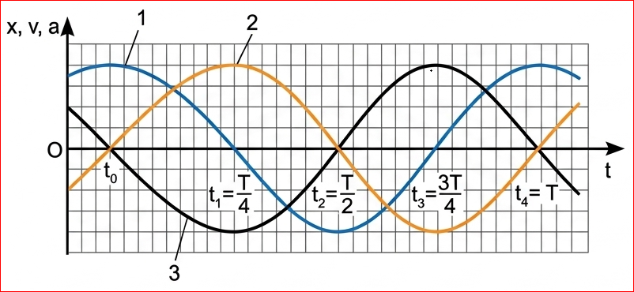
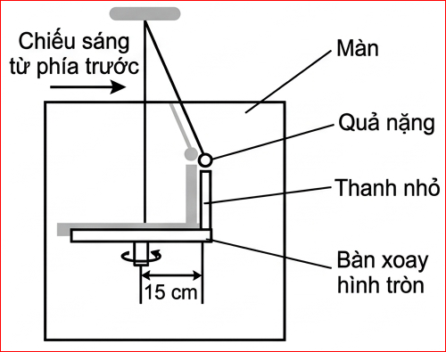
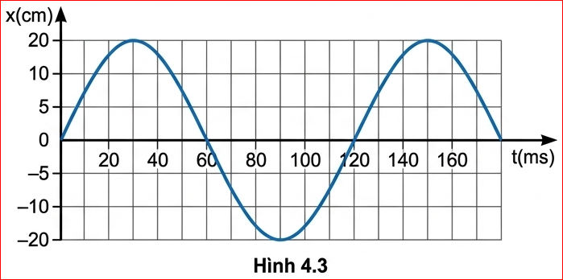
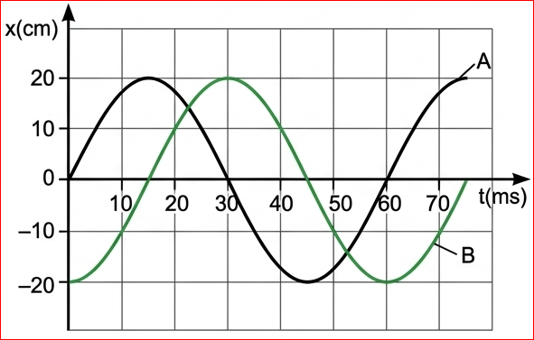

Khi biết phương trình hoặc đồ thị của vật dao động điều hoà, làm thế nào để xác định được vận tốc và gia tốc của vật?
I. BÀI TẬP VÍ DỤ
Ví dụ 1: Cho phương trình của một vật dao động điều hoà:
\( x = 5\cos(10\pi t + \frac{\pi}{6}) \) (cm)
Xác định biên độ A, tần số f, pha ban đầu \( \varphi \), và li độ \( x_1 \) tại thời điểm \( t_1 = 0,05 \) s.
Giải:
So sánh phương trình dao động của vật với phương trình dạng cơ bản \( x = A\cos(\omega t + \varphi) \):
Ta có:
• Biên độ \( A = 5 \) cm
• Tần số \( f = \frac{\omega}{2\pi} = \frac{10\pi}{2\pi} = 5 \) Hz
• Pha ban đầu \( \varphi = \frac{\pi}{6} \) (rad)
• Li độ lúc \( t_1 \):
\( x_1 = 5\cos(10\pi \cdot 0,05 + \frac{\pi}{6}) = 5\cos(\frac{4\pi}{6}) = -2,5 \) cm.
? 1.
Nếu đề bài cho phương trình dao động không đúng dạng Cơ bản \( x = A\cos(\omega t + \varphi) \) thì ta xác định pha ban đầu như thế nào?
Gợi ý: Ta cần sử dụng các công thức lượng giác để đưa phương trình về dạng chuẩn. Ví dụ: hàm sin chuyển sang cos bằng cách trừ đi \( \frac{\pi}{2} \) (\( \sin \alpha = \cos(\alpha - \frac{\pi}{2}) \)); hoặc nếu có dấu trừ phía trước biên độ, ta cộng thêm \( \pi \) vào pha (\( -A\cos \alpha = A\cos(\alpha + \pi) \)).
? 2.
Có thể sử dụng mối liên hệ giữa dao động điều hoà và chuyển động tròn đều để xác định pha ban đầu, thời gian để vật đi từ điểm này đến điểm khác trong dao động điều hoà được không?
Gợi ý: Hoàn toàn có thể. Mối liên hệ này (vòng tròn lượng giác) là công cụ rất mạnh. Ta dùng vị trí ban đầu trên vòng tròn để tìm góc \( \varphi \) (pha ban đầu), và dùng góc quét \( \Delta \varphi = \omega \cdot \Delta t \) để tính toán thời gian di chuyển cực kỳ nhanh chóng.
Ví dụ 2: Một vật dao động điều hoà với tần số 2 Hz. Tại thời điểm ban đầu vật có li độ \( x = 5 \) cm và vận tốc \( v = -30 \) cm/s. Xác định:
a) Biên độ và pha ban đầu của dao động.
b) Giá trị cực đại của vận tốc và gia tốc của vật khi dao động.
Giải:
Tần số góc của dao động: \( \omega = 2\pi f = 4\pi \) (rad/s).
a) Khi t = 0:
\( \begin{cases} x_0 = A\cos\varphi = 5 \text{ cm} \\ v_0 = -\omega A\sin\varphi = -30 \text{ cm/s} \end{cases} \)
Biên độ dao động:
\( A = \sqrt{x_0^2 + \frac{v_0^2}{\omega^2}} = \sqrt{5^2 + \frac{(-30)^2}{(4\pi)^2}} \approx 5,54 \) cm.
Pha ban đầu:
\( \tan\varphi = -\frac{v_0}{\omega x_0} = -\frac{-30}{4\pi \cdot 5} = \frac{3}{2\pi} \Rightarrow \varphi \approx 0,44 \) rad.
b) Vận tốc cực đại của vật: \( v_{max} = \omega A = 4\pi \cdot 5,54 \approx 70 \) cm/s.
Gia tốc cực đại của vật: \( a_{max} = \omega^2 A = (4\pi)^2 \cdot 5,54 \cdot 10^{-2} \approx 8,8 \) m/s².
Ví dụ 3: Một vật dao động điều hoà với tần số góc \( \omega = 1 \) rad/s có đồ thị của li độ x, vận tốc v và gia tốc a theo thời gian t được mô tả trên Hình 4.1.

Hãy chỉ đúng đồ thị của li độ (x-t), vận tốc (v-t), gia tốc (a-t) theo thời gian t trên Hình 4.1.
Giải:
Ta đã biết:
- Vận tốc v sớm pha \( \frac{\pi}{2} \) so với li độ và trễ pha \( \frac{\pi}{2} \) so với gia tốc.
- Gia tốc a ngược pha so với li độ và sớm pha \( \frac{\pi}{2} \) so với vận tốc.
Do đó, trên Hình 4.1 đường 2 là đồ thị li độ \( x(t) \), đường 1 là đồ thị vận tốc \( v(t) \), đường 3 là đồ thị gia tốc \( a(t) \).
II. BÀI TẬP LUYỆN TẬP
1. Một vật dao động điều hoà có phương trình là \( x = 2\cos(4\pi t - \frac{\pi}{6}) \) (cm). Hãy cho biết biên độ, tần số góc, chu kì, tần số, pha ban đầu và pha của dao động ở thời điểm \( t = 1 \) s.
Hướng dẫn giải:
Đối chiếu với phương trình tổng quát \( x = A\cos(\omega t + \varphi) \):
- Biên độ: \( A = 2 \) cm
- Tần số góc: \( \omega = 4\pi \) rad/s
- Chu kì: \( T = \frac{2\pi}{\omega} = \frac{2\pi}{4\pi} = 0,5 \) s
- Tần số: \( f = \frac{1}{T} = 2 \) Hz
- Pha ban đầu: \( \varphi = -\frac{\pi}{6} \) rad
- Pha dao động ở thời điểm \( t = 1 \) s là: \( 4\pi(1) - \frac{\pi}{6} = \frac{23\pi}{6} \) rad.
2. Một vật dao động điều hoà dọc theo trục Ox, quanh điểm gốc O, với biên độ \( A = 10 \) cm và chu kì \( T = 2 \) s. Tại thời điểm \( t = 0 \), vật có li độ \( x = A \).
a) Viết phương trình dao động của vật.
b) Xác định thời điểm đầu tiên vật qua vị trí có li độ \( x = 5 \) cm.
Hướng dẫn giải:
a) Tần số góc: \( \omega = \frac{2\pi}{T} = \frac{2\pi}{2} = \pi \) rad/s.
Tại \( t = 0 \), vật ở biên dương (\( x = A = 10 \)) nên pha ban đầu \( \varphi = 0 \).
Phương trình dao động: \( x = 10\cos(\pi t) \) (cm).
b) Khi \( x = 5 \) cm \( \Rightarrow 10\cos(\pi t) = 5 \Rightarrow \cos(\pi t) = \frac{1}{2} \)
Thời điểm đầu tiên tương ứng với góc quét nhỏ nhất: \( \pi t = \frac{\pi}{3} \Rightarrow t = \frac{1}{3} \) s.
3. Hình 4.2 là sơ đồ của một bàn xoay hình tròn, có gắn một thanh nhỏ cách tâm bàn 15 cm. Bàn xoay được chiếu sáng bằng nguồn sáng rộng, song song, hướng chiếu sáng từ phía trước màn để bóng đổ lên màn hình. Một con lắc đơn dao động điều hoà phía sau bàn xoay với biên độ bằng khoảng cách từ thanh nhỏ đến tâm bàn xoay. Tốc độ quay của bàn quay được điều chỉnh là 3 rad/s. Vị trí bóng của thanh nhỏ con lắc luôn trùng nhau.

a) Tại sao nói dao động của bóng của thanh nhỏ và quả nặng là đồng pha?
b) Viết phương trình dao động của con lắc. Chọn gốc thời gian là lúc con lắc ở vị trí hiển thị trong Hình 4.2.
c) Bàn xoay đi một góc \( 60^{\circ} \) từ vị trí ban đầu, tính li độ của con lắc và tốc độ của nó tại thời điểm này.
Hướng dẫn giải:
a) Hình chiếu của một chuyển động tròn đều lên một trục nằm trong mặt phẳng quỹ đạo là một dao động điều hoà. Vì vị trí bóng luôn trùng nhau nên hai dao động này đồng pha.
b) Biên độ \( A = 15 \) cm, \( \omega = 3 \) rad/s. Giả sử ban đầu ở biên dương (hoặc tùy thuộc vào hình vẽ quy ước). Giả sử ở biên dương: \( \varphi = 0 \). Phương trình: \( x = 15\cos(3t) \) cm.
c) Góc quét \( \Delta\varphi = 60^{\circ} = \frac{\pi}{3} \) rad.
Li độ: \( x = 15\cos(\frac{\pi}{3}) = 7,5 \) cm.
Tốc độ: \( |v| = |-\omega A\sin(\frac{\pi}{3})| = |-3 \cdot 15 \cdot \frac{\sqrt{3}}{2}| \approx 38,97 \) cm/s.
4. Hình 4.3 là đồ thị li độ – thời gian của một vật dao động điều hoà.

a) Xác định biên độ, chu kì, tần số, tần số góc và pha ban đầu của vật dao động.
b) Viết phương trình của dao động của vật.
Hướng dẫn giải (Dựa trên đọc đồ thị):
a) Dựa vào các đỉnh trên trục hoành và trục tung:
- Biên độ A (Đọc giá trị lớn nhất trên trục x).
- Chu kì T (Thời gian giữa hai đỉnh liên tiếp).
- Tần số \( f = \frac{1}{T} \), tần số góc \( \omega = 2\pi f \).
- Dựa vào giá trị \( x \) và chiều chuyển động tại \( t = 0 \) để xác định \( \varphi \).
b) Lắp các giá trị vào phương trình \( x = A\cos(\omega t + \varphi) \).
5. Đồ thị li độ - thời gian của hai vật dao động điều hoà A và B có cùng tần số nhưng lệch pha nhau Hình 4.4.

a) Xác định li độ dao động của vật B khi vật A có li độ cực đại và ngược lại.
b) Hãy cho biết vật A hay vật B đạt tới li độ cực đại trước.
c) Xác định độ lệch pha giữa dao động của vật A so với dao động của vật B.
Hướng dẫn giải:
a) Gióng trực tiếp trên đồ thị các thời điểm cực đại của mỗi đường và đọc giá trị của đường kia.
b) Quan sát đỉnh đồ thị nào xuất hiện ở mốc thời gian sớm hơn thì vật đó đạt li độ cực đại trước (sớm pha hơn).
c) Dùng công thức độ lệch pha \( \Delta\varphi = \omega \cdot \Delta t = \frac{2\pi}{T} \cdot \Delta t \) với \( \Delta t \) là khoảng thời gian giữa 2 đỉnh liên tiếp của 2 đồ thị.
Em đã học
Cách xác định các đại lượng biên độ, chu kì, tần số, tần số góc, pha,... khi biết phương trình hoặc đồ thị của vật dao động điều hoà và ngược lại.
Em có thể
Xác định được chu kì, tần số, tần số góc và viết phương trình của vật dao động điều hoà (Ví dụ Đồng hồ quả lắc).
TRẮC NGHIỆM CỦNG CỐ & VẬN DỤNG
I. Trắc nghiệm (5 câu)
II. Bài tập vận dụng tính toán
Bài 1: Một vật dao động có phương trình \( x = 4\cos(5\pi t - \frac{\pi}{2}) \) cm. Tính vận tốc của vật tại thời điểm \( t = 0,5 \) s.
Giải:
Phương trình vận tốc: \( v = -20\pi \sin(5\pi t - \frac{\pi}{2}) \)
Thay \( t = 0,5 \): \( v = -20\pi \sin(5\pi(0,5) - \frac{\pi}{2}) = -20\pi \sin(2\pi) = 0 \) cm/s.
Bài 2: Một vật dao động với biên độ \( A = 5 \) cm, tốc độ cực đại là \( 20\pi \) cm/s. Tính chu kì dao động.
Giải:
Ta có: \( v_{max} = \omega A \Rightarrow 20\pi = \omega \cdot 5 \Rightarrow \omega = 4\pi \) rad/s.
Chu kì: \( T = \frac{2\pi}{\omega} = \frac{2\pi}{4\pi} = 0,5 \) s.
Bài 3: Khi li độ \( x = 3 \) cm thì vận tốc là \( v = -40\pi \) cm/s. Biết tần số góc \( \omega = 10\pi \) rad/s. Tìm biên độ A.
Giải:
Sử dụng hệ thức độc lập với thời gian: \( A^2 = x^2 + \frac{v^2}{\omega^2} \)
\( A^2 = 3^2 + \frac{(-40\pi)^2}{(10\pi)^2} = 9 + 16 = 25 \)
Vậy biên độ \( A = 5 \) cm.